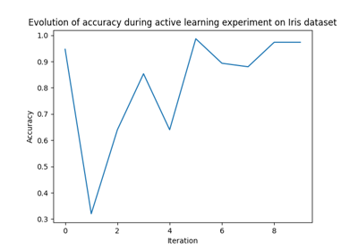
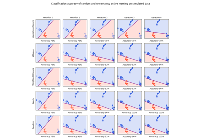
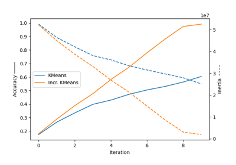
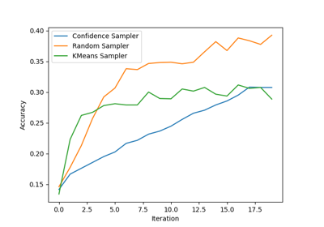

Examples¶
Those examples show basic usage of cardinal as well as how to craft custom query samplers and use them in advanced experiments.
Lowest confidence vs. Random sampling
Lowest confidence vs. Random sampling
Starting an Active Learning experiment
Starting an Active Learning experiment

Running and resuming an experiment
Running and resuming an experiment
Replay and experiment


Active Learning on Digit Recognition with Clustering-based Sampling
Active Learning on Digit Recognition with Clustering-based Sampling

Lowest confidence vs. KMeans sampling
Lowest confidence vs. KMeans sampling


Incremental KMeans
# Properties
These examples test the behavior of samplers in peculiar synthetic settings.


Noisy boundary 2